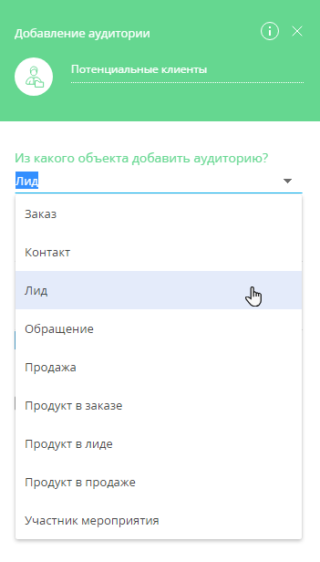
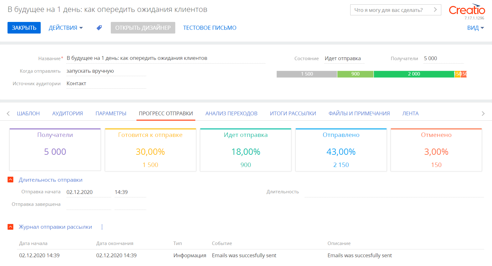
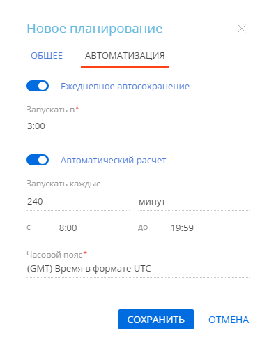
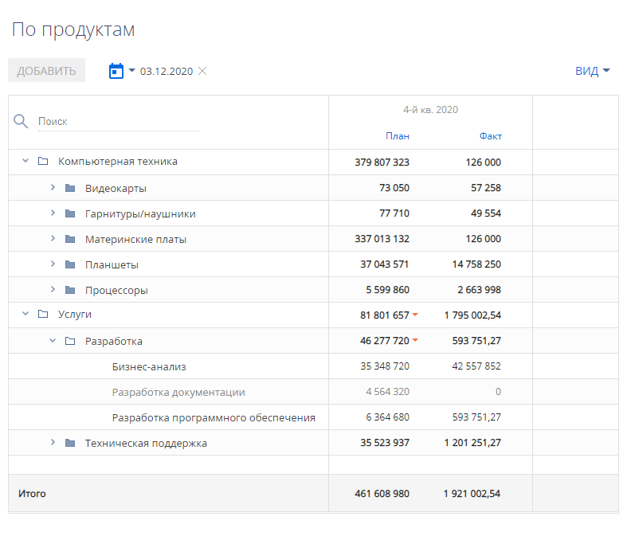
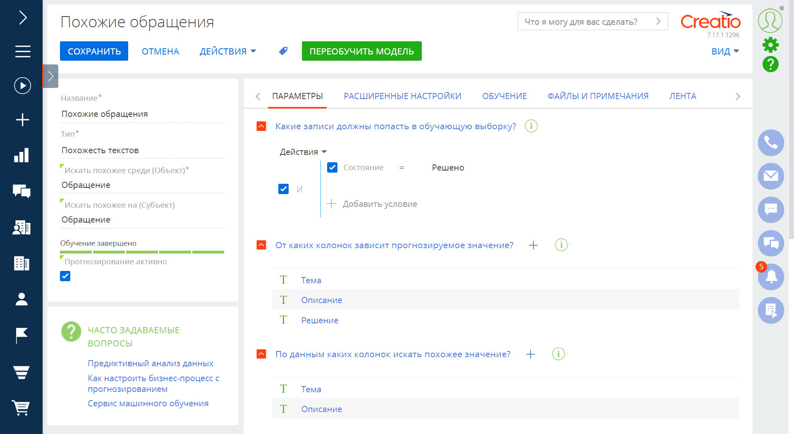
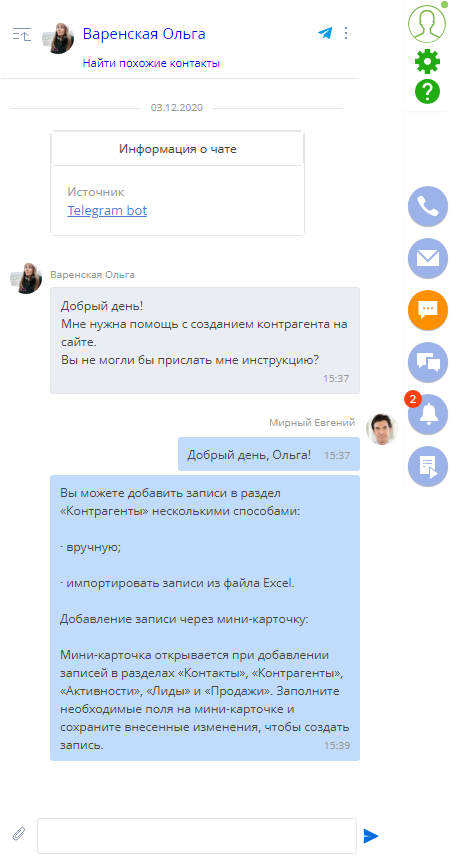
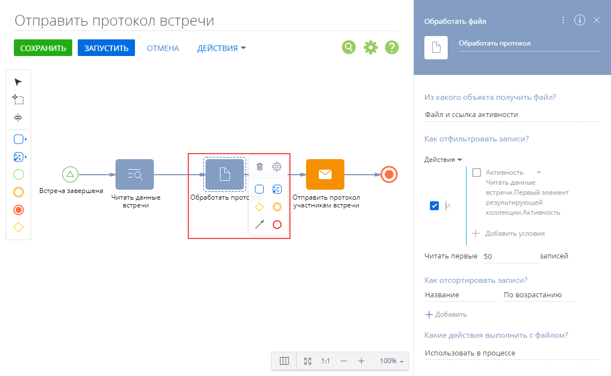
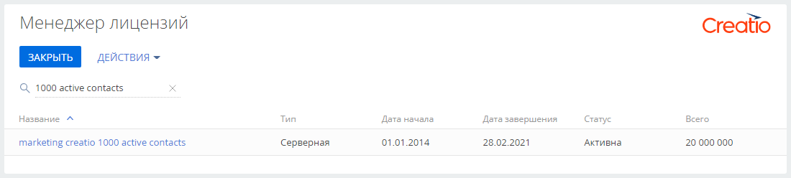

Представляем обзор изменений и улучшений, реализованных в Creatio версии 7.17.1.
Инструкция по обновлению для приложений on-site доступна в отдельной статье.
Marketing Creatio
Кампании
- Появилась возможность добавлять участников в кампанию из различных объектов системы, например, лидов, обращений, контрагентов.
Добавление в кампанию аудитории из лида
- Реализована возможность передавать данные объектов, из которых импортированы участники кампании, в шаблон рассылки для построения макросов и в условные переходы кампании для настройки фильтров.
Рассылки
- В разделе [Email] появился новый дашборд “Прогресс отправки рассылок”, на котором можно получить данные по всем рассылкам, отправленным за последние 72 часа: время начала отправки и итоговое число получателей, для которых рассылка была подготовлена и обработана.
- На странице рассылки добавлена вкладка [Прогресс отправки], на которой вы можете получить информацию о текущем состоянии отправки рассылки, узких местах и длительности процесса, первичных откликах провайдера, а также проблемах, возникших в ходе отправки.
Вкладка [Прогресс отправки] на странице рассылки
- Исправлена ситуация, когда триггерная рассылка, которая последний раз запускалась более 6 часов назад, при следующем запуске не отправлялась.
Sales Creatio
-
При работе с одним периодом планирования на листе блок “Итого” в правой части листа планирования будет скрыт, как неинформативный. При работе с двумя и более периодами блок “Итого” с суммарными данными снова отобразится.
-
Улучшен интерфейс настройки планирования. Общие настройки листа и настройки автоматизации вынесены на отдельные вкладки.
Новый интерфейс настройки планирования -
Доработана версионность листов планирования. При просмотре версии листа отображаются только те строки, которые были актуальны на момент ее сохранения. Строки, добавленные позже, отображаться не будут. А строки, которые отсутствуют в последней версии листа, отображаются серым цветом.
Пример версии листа планирования
Базовый интерфейс и возможности системы
- В разделах [Контакты] и [Контрагенты] доступна новая диаграмма взаимосвязей. При обновлении на версию 7.17.1 все настроенные взаимосвязи будут перенесены в новую диаграмму. Подробнее о миграции взаимосвязей читайте в Сообществе.
- В сводных таблицах появилась возможность настраивать логику расчета значений для колонок дат с использованием формулы. Это позволяет, например, подсчитать плановую дату закрытия обращения или фактическое время в днях, сколько обращение было в работе.
- Добавлено уведомление подписанных пользователей обо всех новых сообщениях в ленте записей разделов.
- Реализованы инструменты настройки моделей интеллектуально поиска похожих объектов. Модели могут находить похожие записи в системе по неструктурированным текстовым данным. Это можно использовать для решения таких задач как, например, поиск похожих обращений, автоматический подбор статей базы знаний, наиболее подходящих ответов и многое другое.
Пример настройки рекомендательной модели
- Добавлен канал коммуникации с клиентами через мессенджер Telegram. Все сообщения, отправленные в настроенный в приложении канал Telegram, будут доступны операторам для обработки в коммуникационной панели. Добавить и настроить новый канал можно в разделе дизайнера системы “Настройка чатов”.
Обработка сообщений Telegram-чата в коммуникационной панели
Интеграции
- При синхронизации с календарями Exchange и Google добавлена возможность работать с приватными встречами. В расписании Creatio такие встречи отображаются с заголовком “Приватная встреча”, их тема и описание в Creatio не загружаются.
- Изменился адрес разрешенного перенаправления, который необходимо указывать при регистрации приложения Creatio в GSuite для синхронизации с календарями и контактами Google. Для корректной синхронизации необходимо заново создать идентификатор клиента OAuth 2.0 и выполнить настройку. Подробнее читайте в статье "Зарегистрировать приложение в GSuite".
Бизнес-процессы
- Появилась возможность автоматизировать управление файлами в бизнес-процессах. Для этого реализован элемент бизнес-процесса [Обработать файл], который позволяет вычитывать и копировать файлы, которые находятся на детали [Файлы и ссылки]. Вычитанные файлы формируют исходящую коллекцию, которую можно использовать далее в процессе. Например, элемент [Отправить email] может добавлять нужные файлы в виде вложений в письмо.
Данный элемент работает только с теми файлами, которые хранятся в базе данных приложения. Если у вас настроено хранение файлов в стороннем хранилище (в файловой системе или облаке), то данный элемент не сможет с ними работать. API для работы с файлами из сторонних хранилищ появится в ближайших релизах.Пример использования элемента [Обработать файл] - Добавлен новый параметр процесса “Файл”. Этот параметр хранит информацию о файле и предназначен для передачи этой информации между элементами и бизнес-процессами.
- В элементе [Отправить email] реализована возможность добавлять вложенные файлы в отправляемые письма. Для этого в элемент необходимо добавить параметр и указать в качестве источника данных необходимые файлы. Список файлов можно получить из элемента [Обработать файл].
- Появилась возможность при запуске интерпретируемых бизнес-процессов из клиентского JS-модуля и C# кода получать один или более результирующих параметров.
Инструменты пользовательской настройки
- В мастере разделов и мастере деталей появилась возможность выводить на страницу справочное поле, которое ссылается на представление данных (view), например, организационную структуру компании или библиотеку процессов.
- При настройке деталей в мастере разделов для ускорения и упрощения настройки доступны новые возможности:
- Создать объект для новой детали и зарегистрировать по нему деталь.
- Создать деталь по существующему объекту Creatio.
- Создать справочную колонку, которая будет связывать новую деталь с настраиваемой страницей.
- Перейти от просмотра свойств существующей детали к ее настройке в мастере деталей. Если не было закрыто окно настроек детали в мастере, откуда осуществлен переход, то название детали и набор колонок отобразятся сразу после сохранения в мастере деталей.
- При указании полей связи для колонок добавлена фильтрация по справочникам, на которые они ссылаются. При наличии однозначного соответствия справочных колонок на странице и детали система автоматически предложит установить связь.
- При настройке вкладок страницы в мастере разделов и дизайнере преднастроенных страниц появилась возможность редактировать код вкладки при ее создании.
- В мастере разделов и дизайнере преднастроенных страниц для удобства локализации появилась возможность указывать заголовки элементов интерфейса на разных языках. Опция доступна для заголовка вкладки, заголовка детали и справочной колонки связи. В дизайнере преднастроенных страниц такая возможность появилась также для кнопок.
- В бизнес-правиле “Заполнять значение поля” реализована возможность настраивать логику расчета значений в полях дат с использованием формулы. Это позволит, например, рассчитать фактическую длительность выполнения задачи, дату следующей оплаты по счету и т. д.
Пример настройки бизнес-правила для расчета периода

Администрирование
- При отключении администрирования объекта по записям настройки журнала изменений сохраняются без изменений.
- Для приложений на .Net Core добавлена возможность установить приложение Marketplace через стандартный интерфейс загрузки приложений, без загрузки файла.
Менеджер лицензий
- В менеджере лицензий появилась возможность работать с серверными лицензиями. Подробнее: Лицензировать Creatio.
Пример отображения серверных лицензий
- Добавлена возможность удаления всех лицензий из приложения.
- Для удобства процедуры лицензирования кнопки запроса и загрузки лицензий сгруппированы на панели действий.
Инструменты разработки
- В веб-службе Data Service в рамках SelectQuery реализована возможность фильтрации записей по источнику вхождения текущего пользователя в роли: прямое вхождение, делегирование, руководительское наследование, наследование иерархии ролей и другие. Это позволит, например, настраивать фильтрацию записей по источнику вхождения в реестрах разделов. Подробнее читайте в статьях “Класс SelectQuery” и “Пример “Отфильтровать записи раздела [Контакты] по источнику вхождения в роли””.
Управление конфигурацией
- Реализовано открытие диаграммы зависимостей пакетов из обновленного раздела [Управление конфигурацией]. Переход доступен в меню действий раздела.
- Добавлена возможность работы с метаданными в обновленном разделе [Управление конфигурацией]. Открыть метаданные можно из меню действий элемента или непосредственно из меню действий записи схемы.